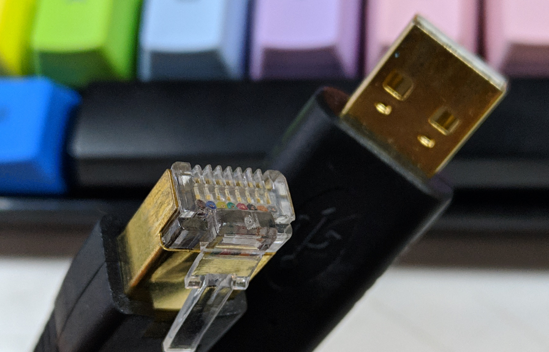
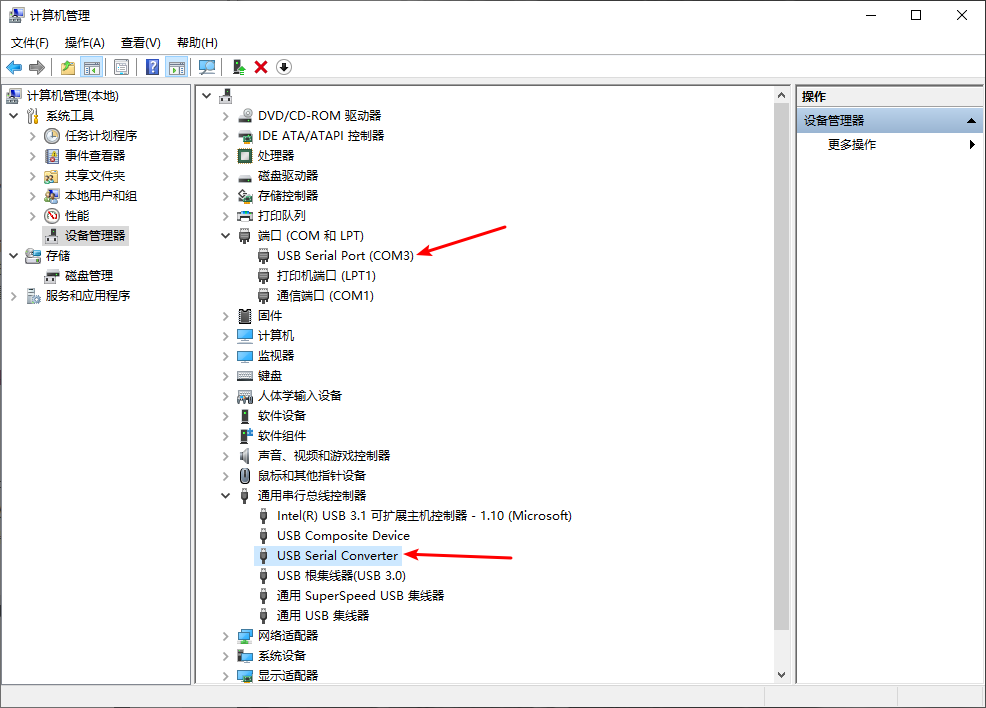
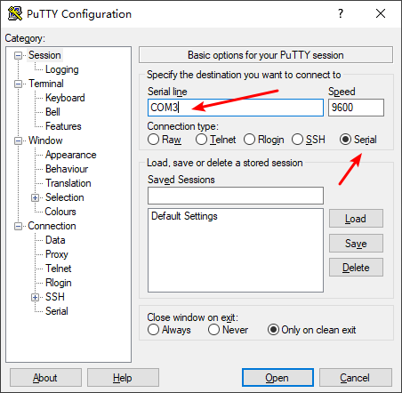
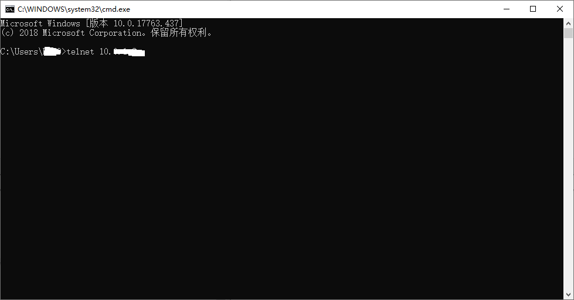
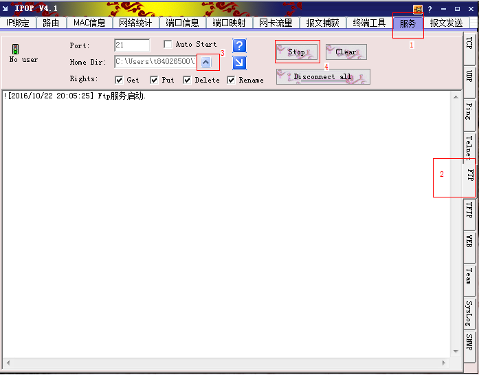
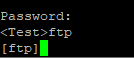
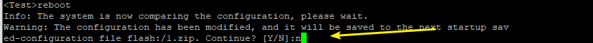

一、使用Console进行配置
首次使用此交换机，必须通过console口配置，完成后才可以使用WEB页面进行进一步的配置操作

使用上图的线分别连接电脑的usb口和交换机的CONSOLE口
然后，查看电脑是否已经安装好驱动，如下图所示。如果显示异常，用驱动大师等打驱动

使用 putty 或者华为的 IPOP 软件
这里，我以putty为例，打开软件后，按下图填写， 【COM3】这个通过在设备管理器那里查看获取

然后，就进入了控制台，如果没有反应，按一下回车键
二、初始化交换机
参考网址：
https://support.huawei.com/enterprise/zh/knowledge/EKB1000067741
如下是知道密码的方法：
进入Console，输入下方命令，进入系统视图
system-view
然后输入
undo startup saved-configuration
ctrl+z 退出 系统视图，进入用户视图，输入
reset saved-configuration
在出现的提示中输入 【y】
然后，输入
reboot
重启设备，此时系统会提示两次选择，第一次提示是否保存当前配置，选择N，第二次提示是否重启，选择Y。 重启完成后设备即恢复出厂设置。
如果不知道密码，则使用下方的方法
按下开关，重启交换机
重启过程中，出现如下提示,按下Ctrl+B 进入 BOOTROM 菜单
Press Ctrl+B to enter BootROM menu … 2
然后输入默认密码：
输入 7 ，选择如下选项：
- Clear password for console user
之后输入 1 ， 选择如下选项：
- Boot with default mode
然后，按照上面知道密码的方法重置交换机
三、开启WEB管理界面
参考文档：https://support.huawei.com/enterprise/zh/knowledge/EKB1000067408
在Console下，输入 dir , 查看是否有 WEB.zip 或 WEB.7z 等字样的文件
dir
之后输入 sy ， 进入系统视图, 按照下方操作
sy
http server load xxxxx.web.zip //加载WEB文件，如果有加载过，则忽略
http server enable //开启WEB
aaa
local-user 用户名 pass cip 密码 //设置登陆账号密码，替换 “用户名” 和 “密码”
local-user 用户名 service-type http //设置账号的服务类型
local-user 用户名 privilege level 15 //设置账号的权限等级，用户的优先级分为16个级别，级别标识为0～15，标识越高则优先级越高。
quit
int vlan 1
ip add x.x.x.x 24 //配置登陆的接口IP地址
quit
save //保存配置
之后，用网线连接电脑和交换机。网线接交换机的LAN口，电脑设置ip 跟刚才设置的IP 同网段，然后浏览器访问该网址即可。
如果在浏览器访问过程中，有些地方不能操作，可能是浏览器问题，换成IE的吧
四、启用交换机的Telnet
system-view //输入命令进入系统视图 ,符号由
变为[sysname]
telnet server ? // 查看telnet的参数 ，如 enable 或 disable
telnet server enable // 开启交换机的telnet服务
telnet server port 23 // 可选，配置telent端口 （默认为23）
user-interface maximum-vty 5 // 默认为5，此选项可选，配置VTY用户界面的最大个数（同时可以登录的最大数）
user-interface vty 0 4 // 因为上面设置为 5 ， 所以这里填写 0（第一个界面）和4（最后一个界面），总共选择5个界面
protocol inbound telnet //配置 vty 支持 telnet 协议
authentication-mode aaa // 这些界面使用aaa认证
quit //退出vty配置界面
aaa // 进入 aaa 配置界面
local-user 用户名 password ? // 查看可以设置的密码类型
local-user teluser password irreversible-cipher General@1 //添加一个用户名为【teluser】的用户，密码为【General@1】，密码类型为不可逆加密
local-user teluser service-type telnet http // 配置 teluser 这个用户可以使用的服务类型，这里给它配置了 telnet 和 http
local-user teluser privilege level 15 // 等级越高，权限越大，0-15
quit
quit
save // 保存配置
到这里，交换机的Telnet服务就配置好了，剩下的，就是打开pc端，运行cmd ，输入命令
telnet 192.168.1.22 //后面的ip 为交换机的ip

之后输入用户名和密码，后面的操作跟 Console 是一样的
五、使用ftp备份还原交换机配置文件
首先，使用IPOP这个软件在本地电脑开启Ftp服务，将电脑作为ftp服务器

电脑开启ftp成功后，用Console或telent连接上交换机后台，将交换机作为ftp客户端，按如下操作
进入系统，后，输入 ftp ：

然后输入，这样就打开了ftp服务器的地址
open 192.168.1.44 //地址为你开启ftp服务电脑的ip
因为ftp服务器没有定义用户和密码，直接按两下回车，进入我们电脑ftp共享的目录，可以输入
【dir】查看该共享目录下的文件
这里有两个命令，分别是【get】和【put】，直接在其后面加文件名，就可以上传和备份文件了
[get] 是从服务器下载文件到本地 （即从pc共享目录导入文件到交换机）
[put] 是从本地上传文件到服务器 （即从交换机备份文件pc共享目录）
备份交换机配置文件
put vrpcfg.zip backup2019-5-7.zip // [vrpcfg.zip] 这个文件就是交换机的配置文件， [backup2019-5-7.zip] 下载备份文件，另起一个名字
还原交换机配置文件
get backup2019-5-7.zip // 获取pc上的备份文件到交换机，（如果备份的文件名为vrpcfg.zip ,则会提示覆盖该文件，选择【Y】）
quit // 退出 ftp
startup saved-configuration backup2019-5-7.zip //设置恢复的配置文件为下次启动配置文件
display startup // 显示目前的配置文件状态
reboot //执行重启命令，让还原的配置生效.

** 出现上图的提示，记得选 【 N 】**
然后 提示重启 ，选择 【 Y 】
注意事项：
- console 和 telnet 密码可以不同，还原后密码可能跟远程telnet不同
- 还原备份文件，文件一定要有后缀 .zip
另外，附上一个自己华为三层交换机的笔记